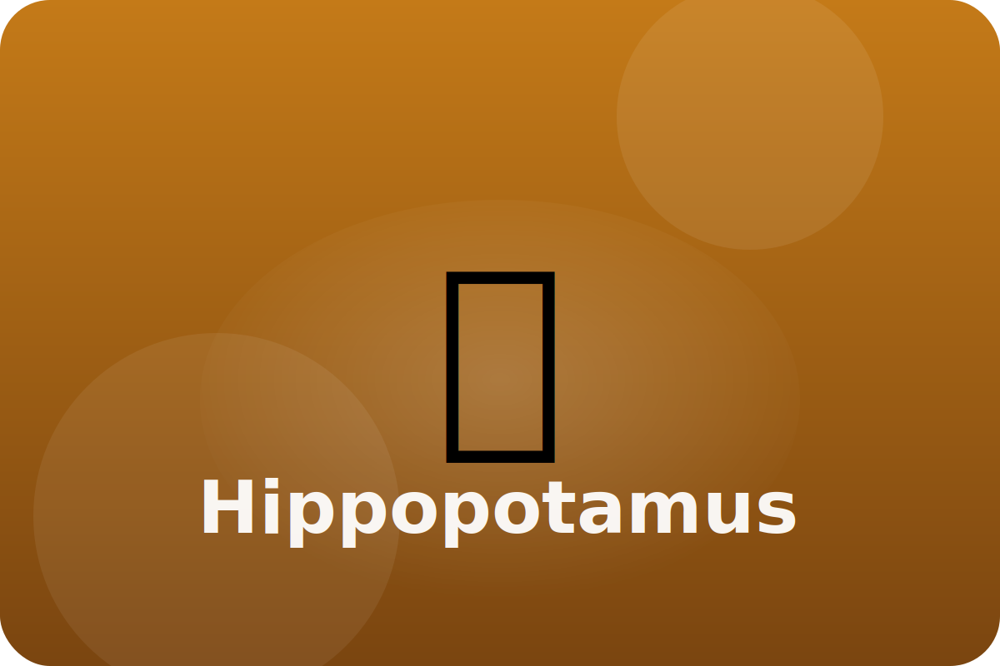

Savannah
Life between water and land
Hippos spend their days soaking in rivers to stay cool, then graze on grasses at night.
Floating Bodies
Dense bones help hippos sink just enough to stand on river bottoms while keeping their eyes above water.
Sunblock Sweat
Hippos sweat a pink fluid that works like sunscreen and keeps their skin healthy.
Wide Mouth
A huge mouth lets hippos show off big teeth to warn others to stay away.
Keep exploring the Hippopotamus
Watch the Hippopotamus in action
Hippopotamus videos for kids